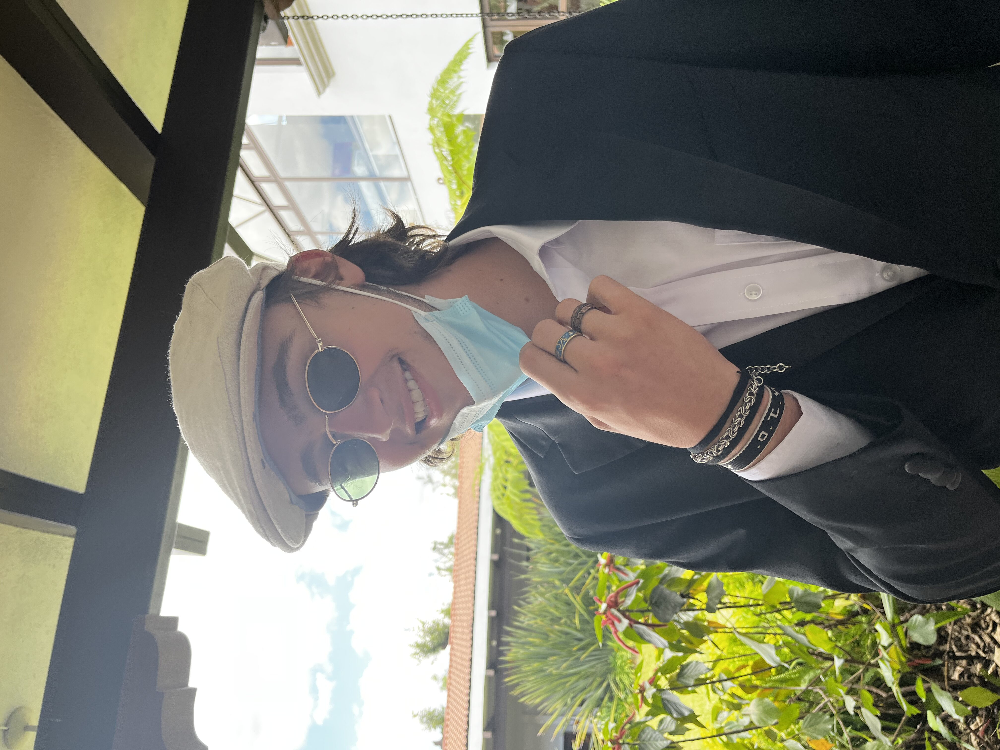

Biografía Gustavo Molina
"el cochito hace 'muuuuu'" – 2021

1. ¿Dónde y cuándo naciste?
Nací el 22 de julio de 2004 en el Hospital Herrera Llerandi.
2. ¿Te consideras una persona extrovertida o introvertida?
La verdad no sé. Creo que soy una persona introvertida que es muy extrovertida, porque soy tímido pero igual hablo muladas. Una vez que agarro confianza sí soy muy extrovertido aunque no suelo hablar mucho de mis emociones o de lo que siento a menos que sean personas muy cercanas, sino que me gusta más simplemente divertirme con mis amigos.
3. ¿Cuál es tu signo zodiacal? ¿Te sientes identificado con él?
Mi signo es cáncer y creo que sí me identifico pero igual es muy general.
4. ¿Quién es tu artista favorito?
(respondió)

5. ¿Cuál es tu canción favorito del momento?
Museo – Rauw Alejandro
6. ¿Tienes algún pasatiempo?
Jugar futbol por las tardes. Empecé a ser portero cuando tenía ocho años y entrené fuertemente durante 3 años. Tenía unos guantes firmados por René Higuita que se me perdieron y casi mato a alguien.
7. ¿Cuál es tu serie favorita?
Está difícil la pregunta pero creo que La Casa de Papel me encanta.
8. ¿Cuál es tu primer recuerdo?
Mi primer recuerdo es de cuando estudiaba en el Valle Verde de zona 15 y vivía en Santa Rosalía Pinula, lo que significaba que me tenía que levantar muy temprano para llegar a clases, entonces me acuerdo de estar medio dormido vistiéndome mientras mi mamá me apuraba que ya tenía que irme. Ese día escupí en una clase y dije que había vomitado para que mandaran a mi casa porque no tenía ganas de estar ahí.
9. ¿Cuál es el mejor recuerdo de toda tu vida?
Mi primer recuerdo fue cuando casi que vivíamos en los Estados por varias operaciones de mi hermano, y que para que yo me sintiera mejor mi papá me llevó a un partido de baseball. Me la pasé muy bien y él me compró su primer bate de baseball.
10. ¿Si pudieras tener cualquier carro en el mundo, cúal sería?
Un camaro blanco o amarillo, como Bumblebee
Horario de Clases
|
monday |
tuesday |
wednesday |
thursday |
friday |
| 8:00 |
historia |
historia |
historia |
psicología |
asamblea |
| 9:00 |
precálculo |
precálculo |
precálculo |
precálculo |
psicología |
| 10:00 |
química |
inglés |
química |
inglés |
arte |
| 11:00 |
química |
proyectos |
química |
proyectos |
inglés |